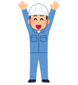

1年目

1年目：1,100円
まずは基本的な業務を覚えるところからスタート。先輩スタッフのサポートを受けながら、仕事の流れやルールを少しずつ習得していきます。丁寧な研修制度があるので、未経験の方でも安心して始められます。まずは基本的な業務を覚えるところからスタート。先輩スタッフのサポートを受けながら、仕事の流れやルールを少しずつ習得していきます。丁寧な研修制度があるので、未経験の方でも安心して始められます。まずは基本的な業務を覚えるところからスタート。先輩スタッフのサポートを受けながら、仕事の流れやルールを少しずつ習得していきます。丁寧な研修制度があるので、未経験の方でも安心して始められます。まずは基本的な業務を覚えるところからスタート。先輩スタッフのサポートを受けながら、仕事の流れやルールを少しずつ習得していきます。丁寧な研修制度があるので、未経験の方でも安心して始められます。まずは基本的な業務を覚えるところからスタート。先輩スタッフのサポートを受けながら、仕事の流れやルールを少しずつ習得していきます。丁寧な研修制度があるので、未経験の方でも安心して始められます。
2年目
2年目：1,600円
業務にも慣れ、自分の担当業務をスムーズにこなせるようになります。お客様対応や後輩へのフォローなど、少しずつ責任ある仕事も任されるように。これまでの経験が活かされ、やりがいもアップします。
3年目
3年目：2,100円
チームの中心メンバーとして、業務全体を見渡しながら働けるように。新人教育や業務改善の提案など、リーダー的な役割を担うことも増えてきます。スキルと信頼に応じて、しっかりと評価される環境です。